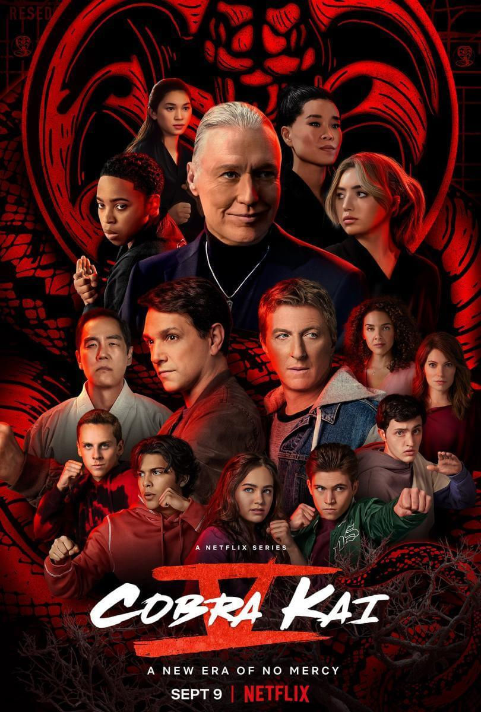
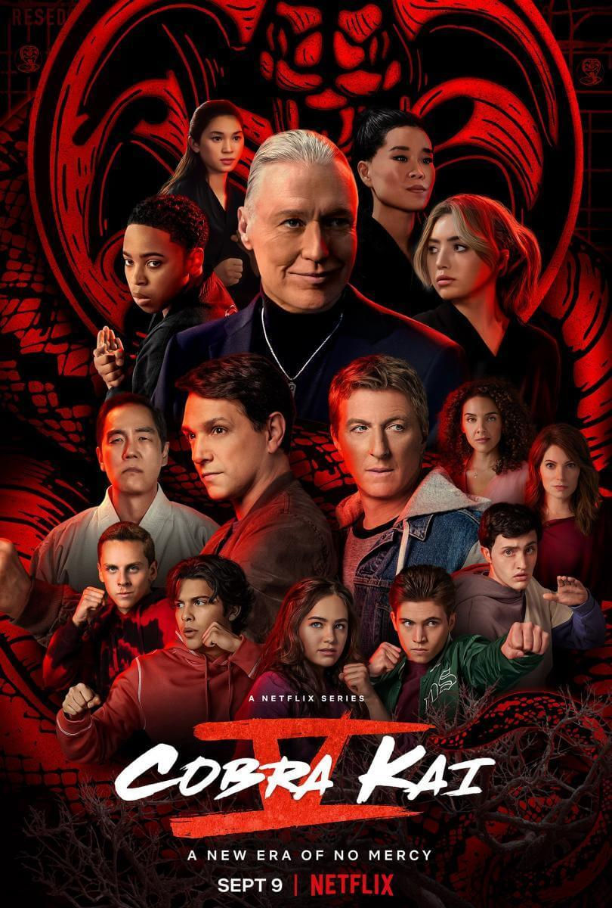
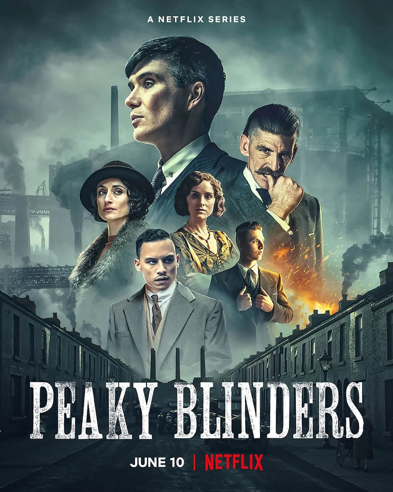
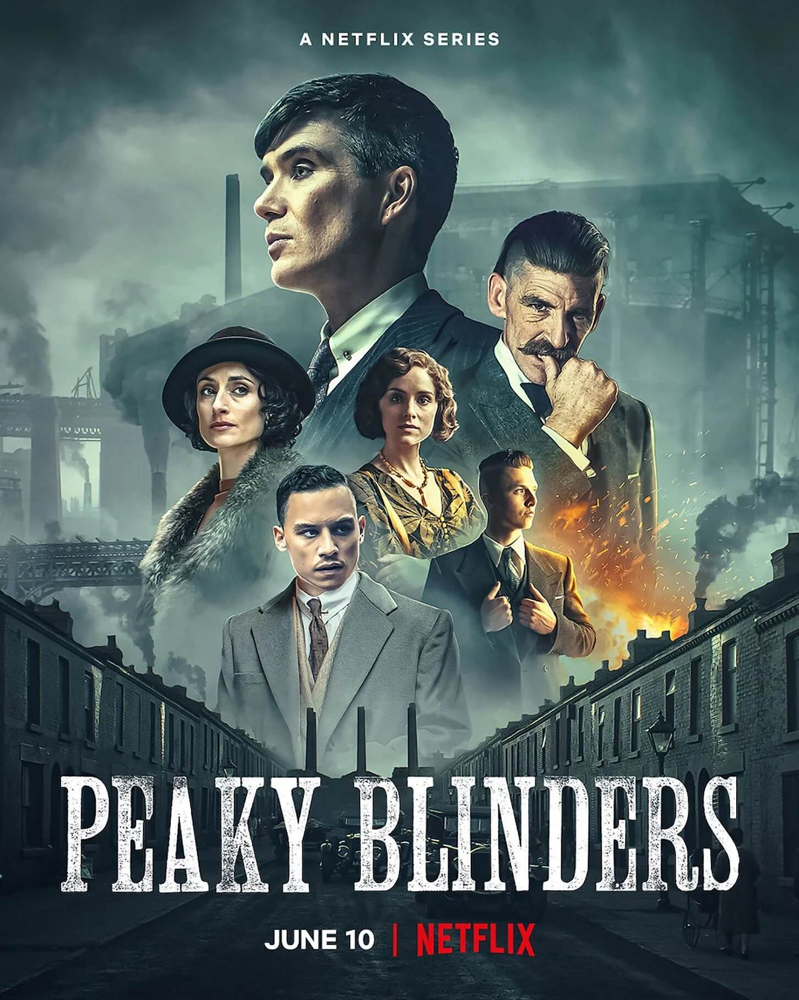

Estrenos
 



 



Euphoria
Drama | Adolescencia
Un grupo de estudiantes de secundaria navega entre drogas, relaciones sexuales, traumas, redes sociales, amor y amistad. El drama estadounidense sigue a un grupo de adolescentes en sus conflictos internos relacionados con el sexo, el uso de drogas y la violencia. Ellos tratarán de lidiar con sus propios demonios, a fin de superar los obstáculos que se interponen en sus metas o, simplemente, en su día a día.
TráilerCobra Kai
Comedia. Drama. Acción | Artes marciales. Karate. Secuela
Secuela de "Karate Kid". 30 años después de su enfrentamiento final en el torneo de kárate 'All Valley', Johnny Lawrence (William Zabka) está en un mal momento de su vida. Sin embargo, tras ayudar a Miguel (Xolo Maridueña), un chico que sufre bullying, Johnny decide volver a abrir el dojo 'Cobra Kai'. El problema es que esto vuelve a desatar la rivalidad con Daniel LaRusso (Ralph Macchio), que ahora es un hombre de negocios felizmente casado, pero al que le falta algo tras la muerte de su mentor, el Sr. Miyagi.
TrailerThe last of us
Terror. Drama. Ciencia ficción. Acción | Futuro postapocalíptico. Pandemias. Videojuego
Veinte años después de la destrucción de la civilización moderna a causa de un hongo -el cordyceps- que se adueña del cuerpo de los humanos, uno de los supervivientes, Joel, recibe el encargo de sacar a la joven Ellie de una opresiva zona de cuarentena. Juntos cruzan Estados Unidos ayudándose mutuamente para intentar sobrevivir... Adaptación del aclamado videojuego homónimo de Naughty Dog.
TrailerPeacemaker
Comedia. Drama. Acción
El Pacificador es una serie de acción que gira en torno a Christopher Smith, un diplomático pacifista e hijo de un comandante del campo de exterminio nazi que fundó el Instituto Pax, el mismo que lucha contra dictadores y señores de la guerra. Christopher Smith es una persona que siempre busca la paz y que hará lo que sea para conseguirla, ya sea matando a cualquier persona que se interponga entre él y la paz.
TrailerStart Up
Drama
Necesitando ganar $90.000 para abrir su propio negocio, Seo Dal-Mi abandona la universidad y toma un trabajo de medio tiempo. Ella sueña con convertirse en alguien como Steve Jobs. Nam Do-San es el fundador de Samsan Tech. Él es excelente con las matemáticas. Comenzó Samsan Tech hace dos años, pero a la compañía no le está yendo bien. De alguna manera, Nam Do-San se convierte en el primer amor de Seo Dal-Mi.
TrailerMerlina
Fantástico. Terror | Comedia de terror. Adolescencia. Familia
Entendemos la obsesión de los creadores con encontrar a la actriz perfecta para Merlina, ya que la historia requiere suficiente versatilidad para jugar con el horror, la comedia y la fantasía. Es un relato que entretiene por su historia intrigante, pero, sobre todo, por ver la actitud desafiante de una protagonista que no se achica ante los obstáculos y con temple inquebrantable.
TrailerPeaky Blinders
Drama. Thriller | Mafia. Años 1910-1919. Crimen.
Una familia de gánsters asentada en Birmingham tras la Primera Guerra Mundial (1914-1918), dirige un local de apuestas hípicas. Las actividades del ambicioso jefe de la banda llaman la atención del Inspector jefe Chester Campbell, un detective de la Real Policía Irlandesa que es enviado desde Belfast para limpiar la ciudad y acabar con la banda.
TrailerTulsa King
Drama | Mafia
Justo después de ser liberado de prisión después de 25 años, el capo de la mafia de Nueva York, Dwight "El General" Manfredi, es exiliado sin contemplaciones por su jefe para instalarse en Tulsa, Oklahoma. Al darse cuenta de que su familia de la mafia puede no tener sus mejores intereses en mente, Dwight construye lentamente una "tripulación" a partir de un grupo de personajes inverosímiles, para ayudarlo a establecer un nuevo imperio criminal en un lugar que para él bien podría ser otro planeta.
TrailerBarbaros
Aventuras. Drama. Acción | Antigua Roma. Histórico
Los sucesos se ambientan en el año 9 d.C., cuando se libra un enfrentamiento que definirá el rumbo de la región. El relato se centra en una guerrera de una tribu germana llamada Thusnelda, quien se une a Folkwin para tratar de dar un golpe doloroso a Roma. Sigue el destino de 3 personas que se cruzaron en el sangriento enfrentamiento de Teutoburgo, el cual supuso una derrota para el Imperio ante la valentía y fiereza de las tribus locales.
Trailer